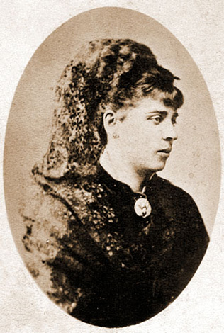
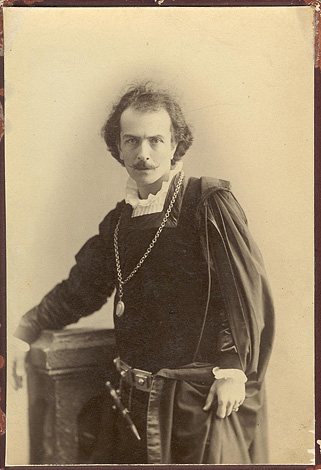

Biography
Komitas occupies a central place in Armenian musical culture. His work brought together ethnographic sensitivity, liturgical depth, and artistic innovation, making him a landmark figure in the preservation and interpretation of Armenian musical traditions.
The original CD-ROM project treated him as a cultural and artistic figure whose life, works, and historical importance could be experienced through audio, image, and narrative. The new website follows that model with a more accessible browsing experience.
Key milestones
Late 19th century
Studied and collected Armenian folk and sacred music, helping preserve a rich tradition.
Early 20th century
Produced works that made Armenian music legible on a modern artistic stage.
Historical significance
His legacy is both musical and cultural, shaping how Armenian identity is expressed through sound.
Legacy gallery


Media highlights
Further recordings, performances, and archival notes can be added as the project evolves.